Guide des absences (mise en place, puis l'appel au quotidien)
Version du document
1.1 · Novembre 2026
Sommaire
1. Qui fait quoi
2. Les sanctions pour absences non justifiées
3. L'emploi du temps
4. La feuille d'appel
5. Les séances : enseignant absent, remplaçant, séance annulée
6. Les absences et les justifications
7. Le bilan des absences et le bulletin
8. Les heures d'exclusion : la décision du Directeur
9. Les enseignants absents
10. Le numéro d'ordre des élèves
11. L'application mobile
12. Questions fréquentes
En bref. Le Surveillant Général saisit l'emploi du temps de chaque classe, fait l'appel chaque jour, enregistre les justificatifs et règle les sanctions. Les heures d'absence se calculent toutes seules, en heures et minutes réelles, et alimentent le bloc « Discipline » des bulletins. Quand un élève atteint les heures d'exclusion, le Directeur, ou la Directrice, est prévenu et décide. Pour la première mise en place, suivez le Guide des absences.
1. Qui fait quoi
Profil
Ce qu'il fait dans le module
Surveillant Général
Saisit l'emploi du temps, fait l'appel et le corrige, marque les séances non assurées, enregistre les justifications et leurs pièces, règle les heures des sanctions et la liste des motifs.
Directeur ou Directrice
Consulte tout, en lecture seule. Est prévenu quand un élève atteint les heures d'exclusion et décide : exclusion temporaire, exclusion définitive ou sursis. Peut défaire les décisions du SG (journal des décisions).
Professeurs
Ne voient pas les absences. Le numéro d'ordre des élèves apparaît dans leur saisie des notes.
Le menu Absences regroupe : Feuille d'appel, Absences, Bilan des absences, Enseignants absents. L'emploi du temps est dans le menu Organisation, les sanctions dans Administration → Paramètres. Les cours ont lieu du lundi au vendredi : l'application ne propose ni cours ni appel le samedi et le dimanche.
2. Les sanctions pour absences non justifiées
Menu Administration → Paramètres, carte Sanctions pour absences non justifiées. Trois sanctions, toujours les mêmes ; vous indiquez seulement à partir de combien d'heures chacune s'applique.
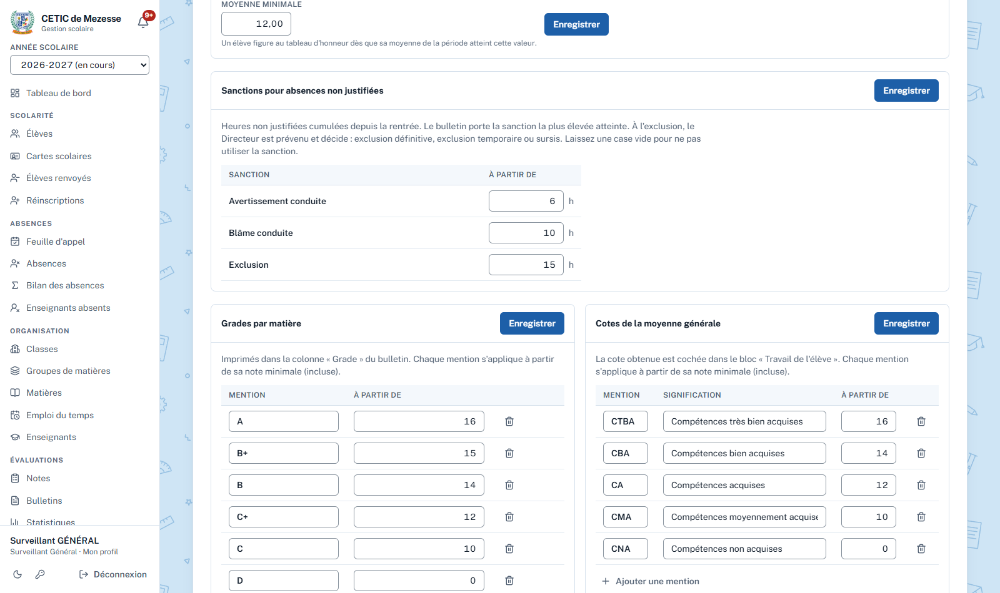
Figure 1 — Les trois sanctions et leurs heures
Les heures comptées sont les heures non justifiées cumulées depuis la rentrée, jusqu'à la fin de la période du bulletin. Une absence justifiée ne compte jamais.
Chaque sanction s'applique à partir de son nombre d'heures (inclus). Le bulletin porte seulement la plus élevée atteinte.
Une case vide : la sanction n'est pas utilisée. Chaque sanction doit partir de plus d'heures que la précédente.
Exclusion n'est jamais automatique : à ces heures, le Directeur est prévenu et décide (chapitre 8). En attendant, l'élève garde le blâme.
Le Directeur peut défaire une modification de ces heures depuis le journal des décisions : les anciennes heures reviennent.
3. L'emploi du temps
Menu Organisation → Emploi du temps, puis la classe. La semaine type s'affiche en tableau : les horaires en lignes, les jours en colonnes, avec le total d'heures de chaque jour.
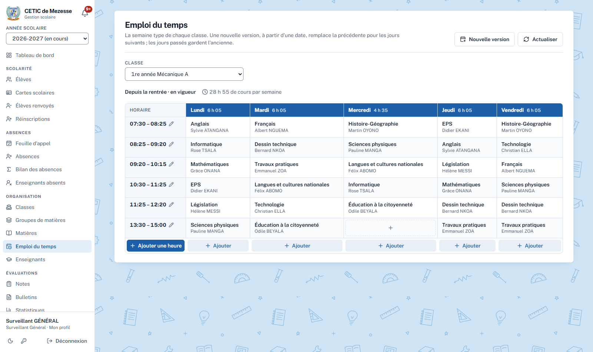
Figure 2 — L'emploi du temps d'une classe · site à gauche, application mobile à droite
Remplir l'emploi du temps
1
Les heures d'abord. Le bouton Ajouter une heure, en bas de la colonne Horaire, ajoute une ligne vide. Il propose de commencer à la fin de la dernière ligne, pour 55 minutes ; changez le début et la fin si besoin.
2
Puis les cases. Chaque case vide porte un + : il ouvre le formulaire avec le jour et l'horaire de la ligne déjà remplis. Choisissez la matière ; l'enseignant est celui de la matière.
3
Corriger. Cliquez sur un cours pour changer sa matière, son jour ou son horaire, ou pour le retirer. Le bouton Ajouter, sous chaque jour, ajoute un cours à un horaire libre.
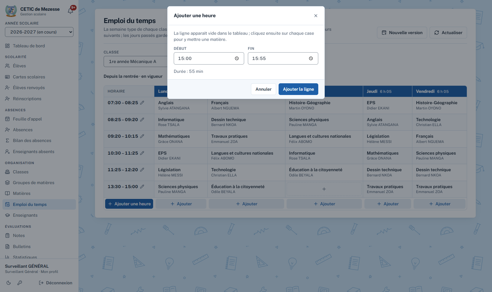
Figure 3 — Ajouter une ligne horaire, avant d'y mettre les matières
Changer l'horaire de toute une ligne
Cliquez sur l'horaire, à gauche de la ligne (le crayon). Le nouvel horaire s'applique aux cours de cette ligne du lundi au vendredi ; les matières restent à leur place. Un horaire qui chevaucherait un autre cours de la classe est refusé, avec le jour et le cours en cause. Une ligne sans cours peut être retirée (Retirer la ligne).
Figure 4 — Le nouvel horaire s'applique à toute la ligne
Les alertes
Enseignant aussi en … : l'enseignant est déjà attendu dans une autre classe à cette heure. Deux cours à la même heure : la classe a deux cours qui se chevauchent. Le détail s'affiche au survol.
À l'enregistrement, une fenêtre le signale ; Enregistrer quand même garde le cours (classe partagée en groupes, cours commun…).
Les versions
Un emploi du temps vaut toute l'année, mais peut changer. Nouvelle version crée un emploi du temps qui vaut à partir d'une date, en reprenant au besoin les cours et les lignes de l'actuel ; les jours passés gardent l'ancien. La liste Version permet de revoir chacune.
Chaque modification de l'emploi du temps est consignée dans le journal des décisions ; le Directeur peut la défaire.
4. La feuille d'appel
Menu Absences → Feuille d'appel. Choisissez la classe et le jour. Les séances viennent de l'emploi du temps ; tout le monde est présent par défaut : vous cochez seulement les absents.
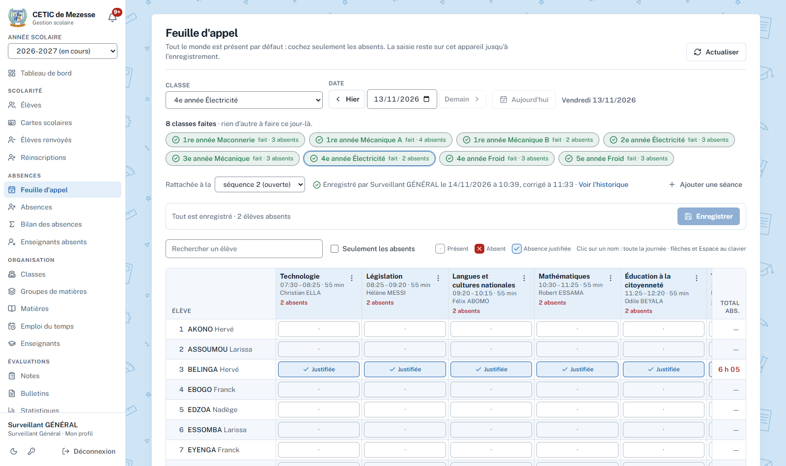
Figure 5 — La feuille d'appel d'une classe · site à gauche, application mobile à droite
Le jour : Hier et Demain passent au jour de classe précédent ou suivant (du vendredi au lundi). Le samedi et le dimanche, la feuille s'ouvre sur le vendredi.
L'état du jour, en haut : les classes déjà faites (avec leur nombre d'absents) et celles qui restent à faire. Un clic ouvre la classe.
Une case : un clic marque l'élève absent à la séance (croix rouge) ; un second clic le remet présent. Une absence déjà justifiée est en bleu ; la retirer supprime aussi sa justification, après confirmation.
Toute la journée : un clic sur le nom de l'élève le marque absent à toutes les séances, ou de nouveau présent partout.
Toute une séance : le menu ⋮ de la séance propose Tous absents et Tous présents.
Rechercher un élève par son nom, son matricule ou son numéro d'ordre ; Seulement les absents réduit la liste. Au clavier, les flèches passent d'une case à l'autre et Espace coche.
La colonne Total abs. donne la durée d'absence de chaque élève ce jour-là. Un élève renvoyé ce jour-là est grisé.
Quand toutes les séances ne tiennent pas à l'écran, une petite flèche › apparaît sur leurs en-têtes : un clic fait défiler le tableau vers la droite (et une flèche ‹ ramène à gauche).
Enregistrer
Ce que vous cochez reste sur l'appareil tant que l'appel n'est pas enregistré : vous pouvez fermer la page, ou perdre le réseau, sans rien perdre. Enregistrer l'appel envoie la feuille en une fois, après confirmation. Ensuite, chaque changement est une correction, gardée dans l'historique de la feuille (Voir l'historique : qui, quand, quoi).
Rattachée à la séquence : la séquence dont les bulletins compteront ces absences. Par défaut la dernière séquence ouverte ; un changement ne s'applique qu'à l'enregistrement.
Ajouter une séance : un cours qui n'était pas prévu dans l'emploi du temps ce jour-là.
5. Les séances : enseignant absent, remplaçant, séance annulée
L'enseignant est absent
Cliquez sur l'en-tête de la séance (la matière ou le nom de l'enseignant). Une fenêtre demande confirmation ; la séance porte ensuite l'étiquette orange Enseignant absent. Un second clic remet l'enseignant présent. Si l'appel n'est pas encore enregistré, il l'est d'abord, avec les absences déjà cochées.
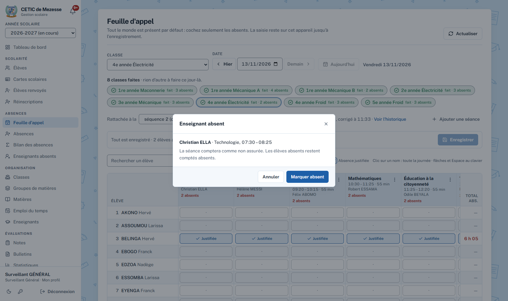
Figure 6 — Un clic sur l'en-tête de la séance : l'enseignant est marqué absent
La séance compte comme non assurée dans la page Enseignants absents (chapitre 9). Les élèves absents à cette séance restent comptés absents : ils devaient être en classe.
Modifier la séance
Le menu ⋮ de la séance → Modifier la séance… ouvre le détail de ce jour-là :
Début et fin : l'horaire réel de ce jour-là, sans toucher à l'emploi du temps.
Remplaçant : un autre enseignant a fait le cours. La séance est alors assurée : l'enseignant prévu n'est pas compté absent.
Enseignant absent et un motif (malade, convocation…).
Séance annulée : le cours n'a pas eu lieu ; personne n'y est compté absent, et ses absences sont effacées après confirmation.
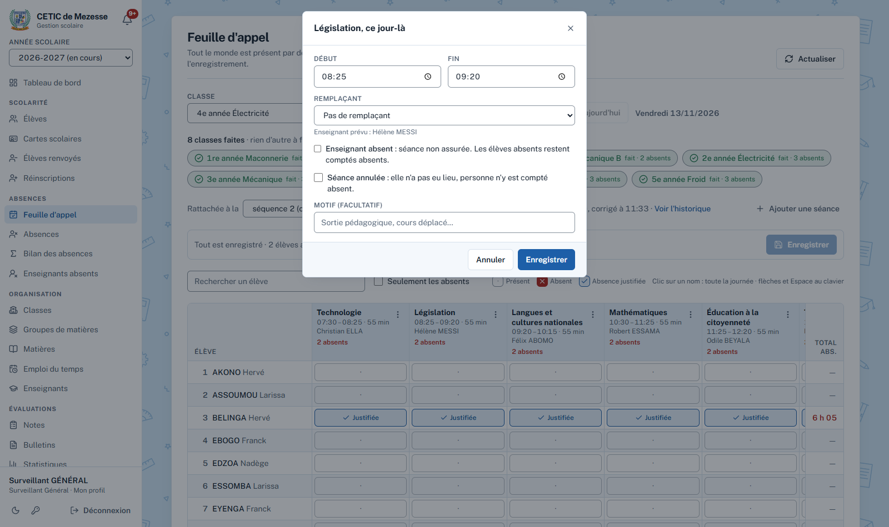
Figure 7 — Le détail d'une séance : horaire, remplaçant, enseignant absent, annulation
6. Les absences et les justifications
Menu Absences → Absences. Toutes les absences relevées, avec leurs filtres, de haut en bas : la classe et la matière ; l'état (Toutes, Non justifiées, Justifiées) ; les raccourcis Aujourd'hui, Cette semaine, Ce mois, Toute l'année ; les dates du … au … ; la recherche par nom, prénom ou matricule. Les trois cartes de totaux (total, justifiées, non justifiées) appliquent le filtre d'un clic. Une justification ne supprime jamais l'absence : elle la classe parmi les heures justifiées.
Affichage par jour
Les absences regroupées par jour, avec l'élève (son numéro d'ordre et sa classe), la matière, l'horaire, la durée et l'état. En descendant, le jour reste affiché sous l'en-tête du tableau, puis cède la place au jour suivant. Les colonnes Élève, Date, Durée et État se trient d'un clic. Un clic sur une absence ouvre son détail et son historique.
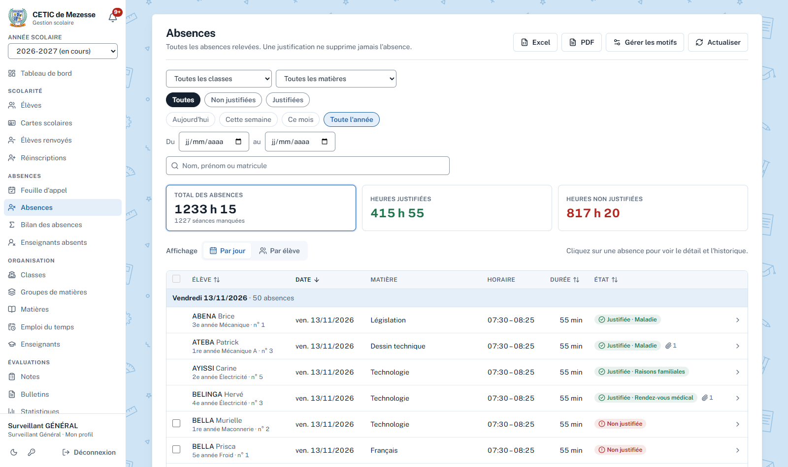
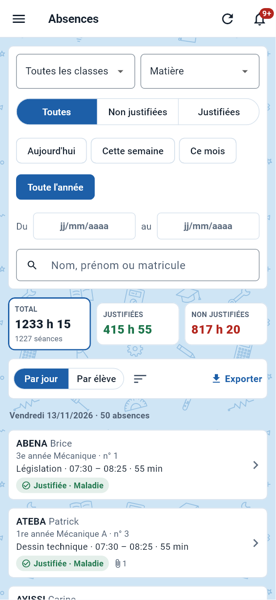
Figure 8 — Les absences, par jour · site à gauche, application mobile à droite
Affichage par élève : justifier
Choisissez Par élève : un bloc par élève, avec ses heures non justifiées et ses absences. C'est l'affichage pour enregistrer un justificatif, par exemple quand un parent apporte un mot.
1
Cochez les absences concernées, ou Tout cocher pour toutes celles de l'élève. Une justification couvre les absences d'un seul élève : les cases des autres se grisent.
2
Justifier (dans le bloc ou dans la barre bleue) ouvre le formulaire : le motif, la date de réception du justificatif, une description facultative et les pièces (photo ou PDF du certificat : PDF, JPEG ou PNG, 3 Mo chacune, 5 au plus).
3
Les absences passent en vert, Justifiée · motif, avec un trombone et le nombre de pièces.
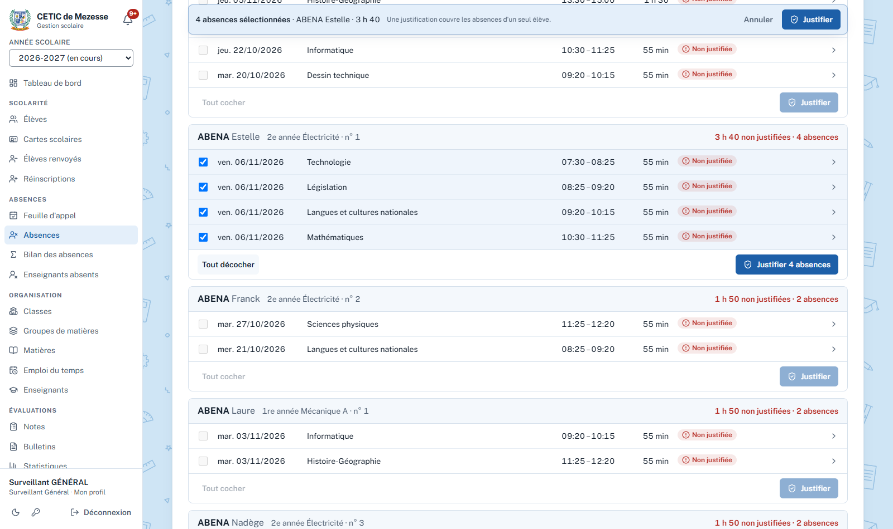
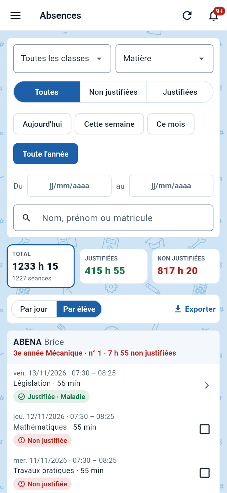
Figure 9 — Les absences, par élève : on coche, puis « Justifier » · site à gauche, application mobile à droite
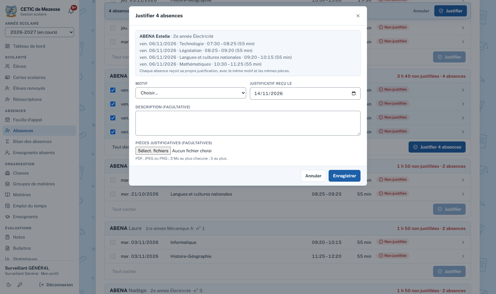
Figure 10 — Le formulaire de justification
Le détail d'une absence
Il donne la séance, la justification et ses pièces (à ouvrir), et l'historique : relevée, corrigée, justifiée, avec qui et quand. Le SG y corrige ou retire une justification.
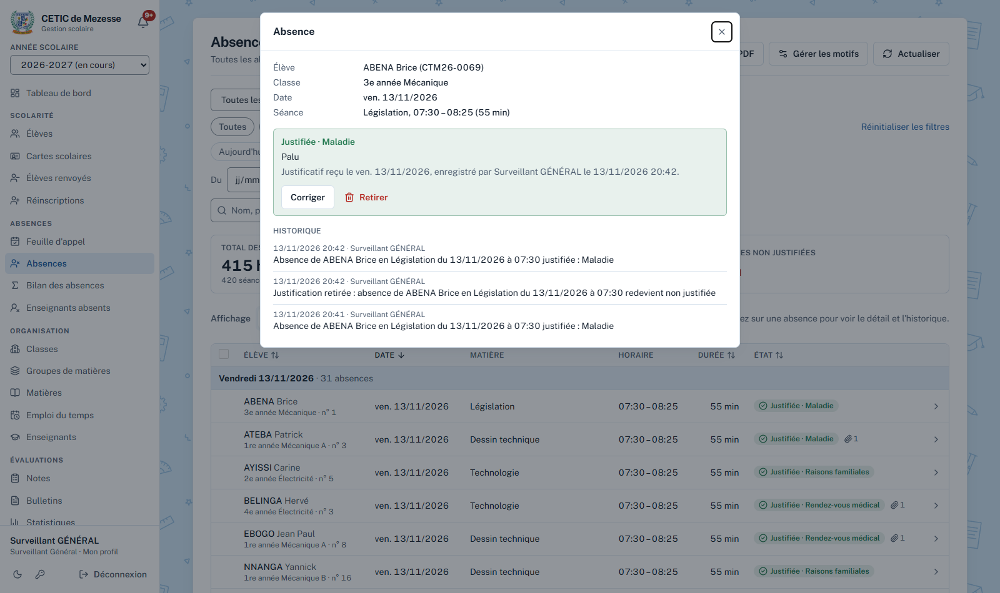
Figure 11 — Le détail d'une absence justifiée et son historique
Gérer les motifs (SG) : ajoutez un motif, ou retirez-le de la liste. Un motif déjà utilisé n'est jamais supprimé ; retiré, il n'est plus proposé.
Excel et PDF exportent les absences du filtre en cours.
7. Le bilan des absences et le bulletin
Menu Absences → Bilan des absences, puis la classe et la période (séquence, trimestre ou année). Pour chaque élève : les séances manquées, le total, les heures justifiées et non justifiées de la période, les heures non justifiées depuis la rentrée et la sanction que portera le bulletin.
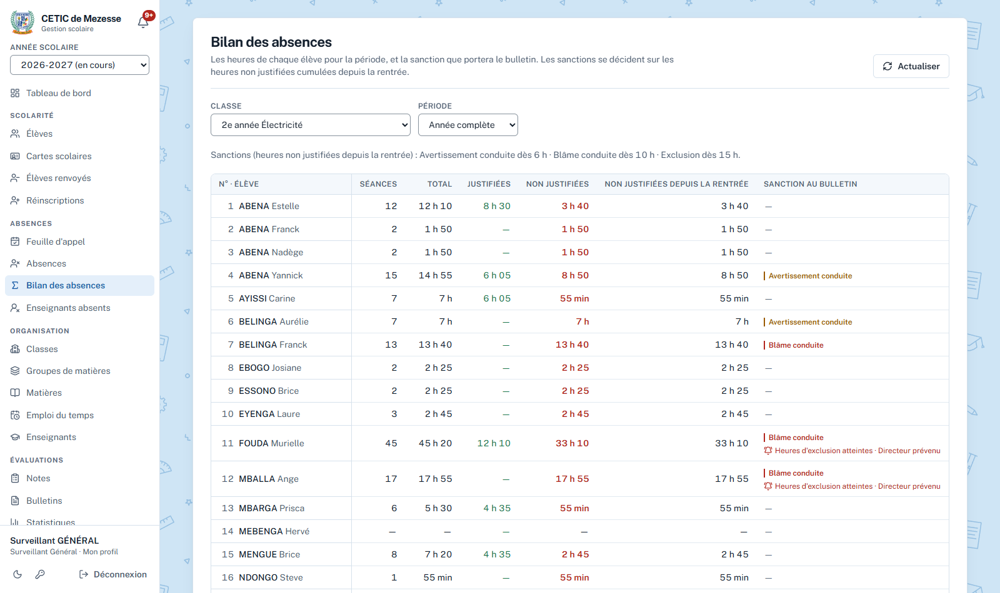
Figure 12 — Le bilan des absences d'une classe · site à gauche, application mobile à droite
Le bloc « Discipline » du bulletin
Ligne du bulletin
Ce qui s'y imprime
Absences non justifiées (h)
Les heures non justifiées de la période (« 3 h 25 »).
Absences justifiées (h)
Les heures justifiées de la période.
Avertissement / Warning
« Oui / Yes » si la sanction retenue est l'avertissement conduite.
Blâme / Reprimand
« Oui / Yes » pour le blâme conduite ; « Oui (sursis) » quand le Directeur a accordé un sursis.
Exclusion (jours / days)
Le nombre de jours d'une exclusion temporaire ; « Définitive » pour une exclusion définitive.
Retards, Consignes
Restent vides.
Le bloc n'est rempli que si la classe a des feuilles d'appel dans la période : rien n'est inventé quand l'appel n'est pas tenu.
8. Les heures d'exclusion : la décision du Directeur
Quand un élève atteint les heures de l'Exclusion (chapitre 2), le Directeur reçoit une seule fois la notification Heures d'exclusion atteintes, qui mène au bilan de la classe. L'élève y porte la mention « Heures d'exclusion atteintes · Directeur prévenu ». Le Directeur décide depuis le Bilan des absences ou depuis la liste des Élèves (colonne Sanction), avec le bouton rouge Décider.
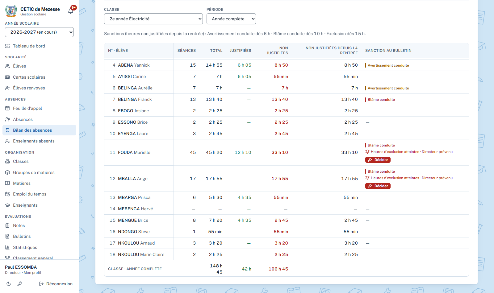
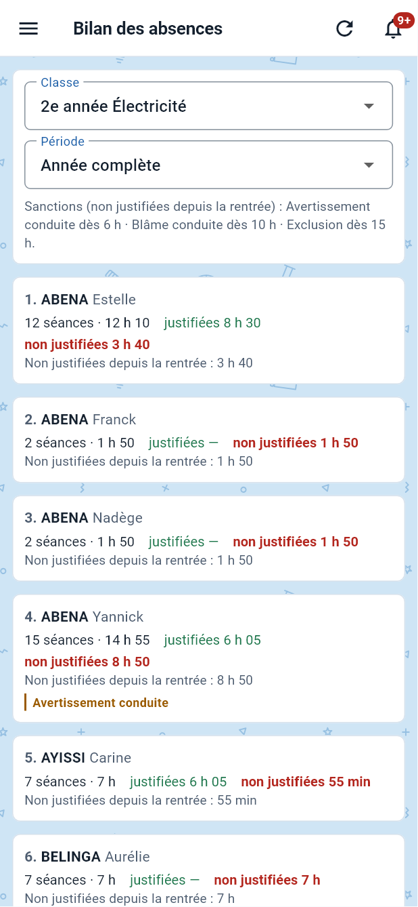
Figure 13 — Le bilan vu par le Directeur, avec « Décider » · site à gauche, application mobile à droite
Décision
Conséquence pour l'élève
Sur le bulletin
Exclusion temporaire
Renvoyé pendant le nombre de jours ouvrés indiqué par le Directeur, à partir de la date choisie, puis il reprend les cours de lui-même (les week-ends sont sautés : 3 jours à partir d'un lundi, retour le jeudi).
Exclusion : nombre de jours
Exclusion définitive
Radié de l'établissement pour toujours : il figure parmi les Élèves renvoyés et ne peut plus être réinscrit les années suivantes.
Exclusion : « Définitive »
Sursis
Reste en classe ; l'exclusion est suspendue, avec un avertissement solennel aux parents.
Blâme : « Oui (sursis) »
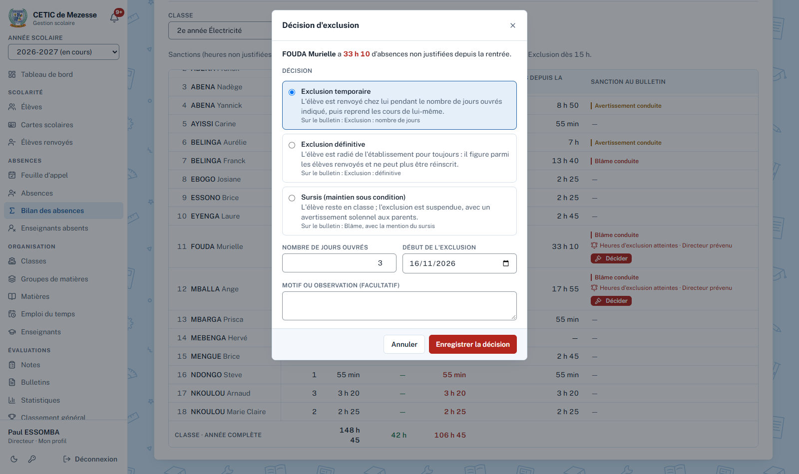
Figure 14 — La décision : exclusion temporaire, définitive ou sursis
La fenêtre demande aussi la date (début de l'exclusion, ou jour du sursis) et, au besoin, un motif ou une observation.
Les surveillants généraux reçoivent une notification. La décision s'affiche sous la sanction : « Décision de la direction : … ».
Elle va sur les bulletins de la séquence ouverte au moment de la décision, du trimestre et de l'année.
En cas d'erreur, le Directeur l'annule avec le bouton Annuler la décision : l'élève n'est plus exclu.
Tant que rien n'est décidé, le bulletin porte le blâme conduite.
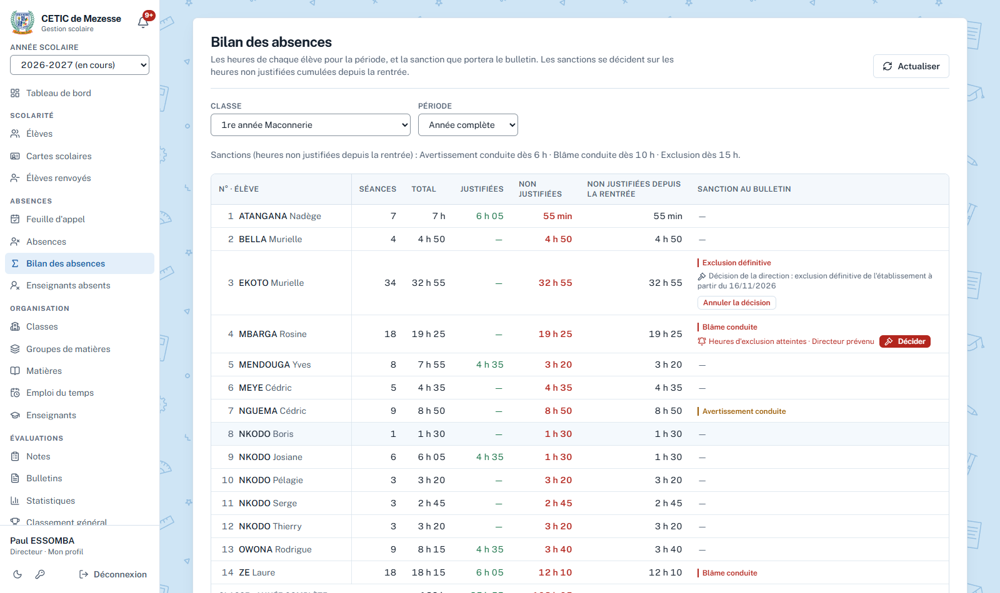
Figure 15 — Une décision prise, annulable par le Directeur
La colonne Sanction de la liste des Élèves donne la sanction de l'année de chacun. La liste Sanction, à côté de la classe, ne garde que les élèves voulus : avec une sanction, avertissement conduite, blâme conduite, exclusion, ou exclusion à décider (heures atteintes, pas encore de décision).
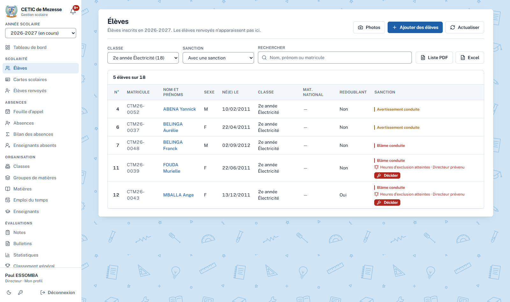
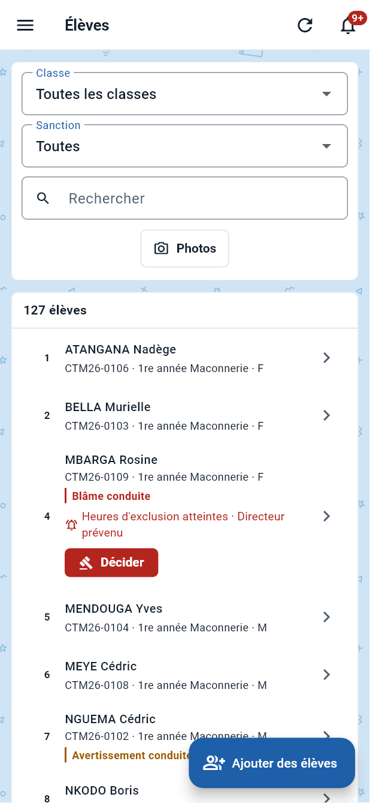
Figure 16 — La liste des élèves, avec leur numéro et leur sanction · site à gauche, application mobile à droite
9. Les enseignants absents
Menu Absences → Enseignants absents : les séances non assurées parce que l'enseignant prévu était absent. Les filtres : la période (du … au …) et l'Enseignant (tous, ou un seul). À gauche, le total d'heures par enseignant ; à droite, les séances avec la date, la classe, la matière, l'horaire et le motif. Avec un enseignant choisi, seuls son total et ses séances s'affichent. Un clic sur la date ouvre la feuille d'appel de ce jour-là.
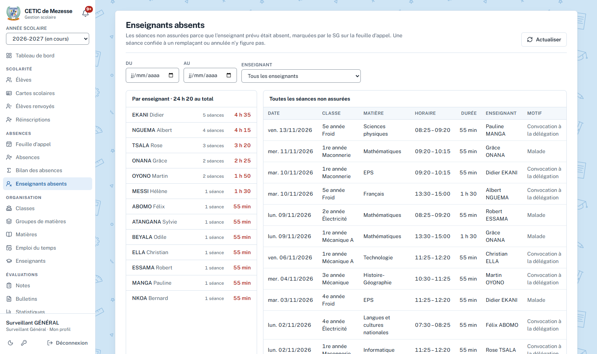
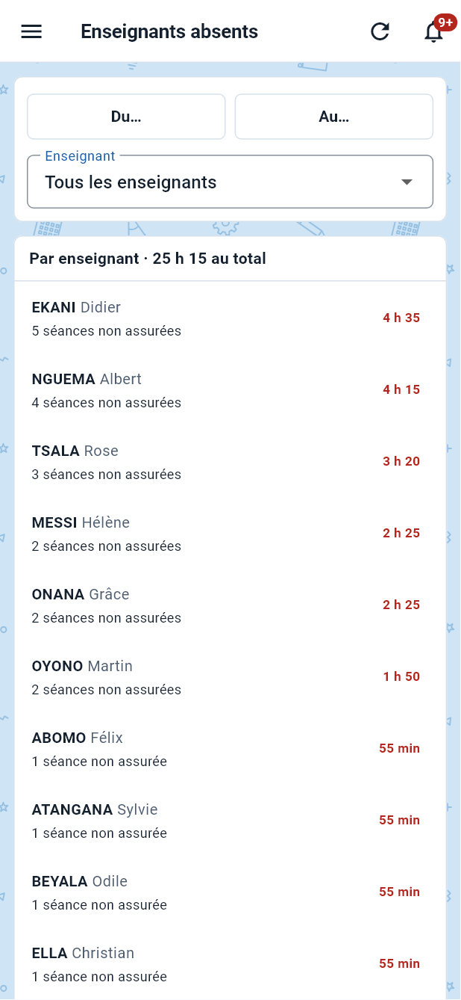
Figure 17 — Les enseignants absents · site à gauche, application mobile à droite
Une séance confiée à un remplaçant, ou annulée, n'y figure pas : elle n'est pas « non assurée ».
10. Le numéro d'ordre des élèves
Chaque élève a un numéro dans sa classe : 1, 2, 3… dans l'ordre alphabétique des noms et prénoms. C'est souvent ce numéro qu'on relève en classe pour l'appel. Il est le même sur tous les écrans : Élèves, Feuille d'appel, Absences (« n° 12 »), Bilan des absences, Notes et saisie des notes.
Les élèves renvoyés gardent leur numéro, pour que ceux des autres ne changent pas en cours d'année. Dans la liste des élèves, qui ne montre pas les renvoyés, il peut donc manquer un numéro.
Dans la feuille d'appel, taper un numéro dans la recherche (« 12 ») affiche cet élève.
11. L'application mobile
L'application Android offre les mêmes écrans, dans le menu Absences et Organisation.
Feuille d'appel : les séances en pastilles, en haut ; touchez-en une pour cocher ses absents. Une flèche au bord des pastilles signale d'autres séances à droite. La saisie reste sur le téléphone jusqu'à Enregistrer l'appel, même sans réseau. Touchez le bandeau sous les pastilles (matière et enseignant) pour marquer l'enseignant absent ; le menu ⋮ donne Tous absents, Tous présents et Modifier la séance.
Absences : les mêmes filtres et les affichages Par jour et Par élève ; on coche les absences d'un élève, puis Justifier. Une pièce peut être prise en photo sur le moment.
Emploi du temps : le tableau défile sur le côté pour voir jusqu'au vendredi. Touchez un horaire pour le changer sur toute la ligne, un + pour remplir une case, Ajouter une heure pour une nouvelle ligne.
Bilan des absences et Élèves : la sanction de chaque élève ; le Directeur y décide des exclusions.
Enseignants absents : les mêmes filtres (période, enseignant), le total par enseignant, puis la liste des séances non assurées.
12. Questions fréquentes
Question
Réponse
La feuille d'appel n'a aucune séance.
La classe n'a pas encore d'emploi du temps (chapitre 3), ou c'est un samedi ou un dimanche. Vous pouvez aussi ajouter les séances du jour à la main.
J'ai coché des absences puis fermé la page.
Rien n'est perdu : la saisie reste sur l'appareil jusqu'à l'enregistrement. Rouvrez la même classe et le même jour.
Un élève est absent mais l'enseignant aussi.
L'élève reste compté absent : il devait être en classe. Marquez l'enseignant absent sur la séance.
Un remplaçant a fait le cours.
Modifier la séance → Remplaçant. La séance est assurée ; l'enseignant prévu n'est pas compté absent.
Je ne peux pas cocher les absences de deux élèves pour une justification.
Une justification couvre un seul élève. Justifiez l'un, puis l'autre.
Le bulletin n'a rien dans le bloc Discipline.
La classe n'a pas de feuille d'appel dans la période du bulletin.
L'élève a les heures d'exclusion mais le bulletin porte un blâme.
Le Directeur n'a pas encore décidé. L'exclusion n'est jamais automatique.
Un élève exclu définitivement ne peut pas être réinscrit.
C'est voulu : l'exclusion définitive est pour toujours. Si elle était une erreur, le Directeur annule la décision.
Une ligne de l'emploi du temps ne se retire pas.
Elle a encore des cours : retirez-les d'abord.
Un cours de l'emploi du temps a une alerte rouge.
L'enseignant est attendu ailleurs à la même heure, ou la classe a deux cours qui se chevauchent. Changez l'horaire ou la matière si ce n'est pas voulu.